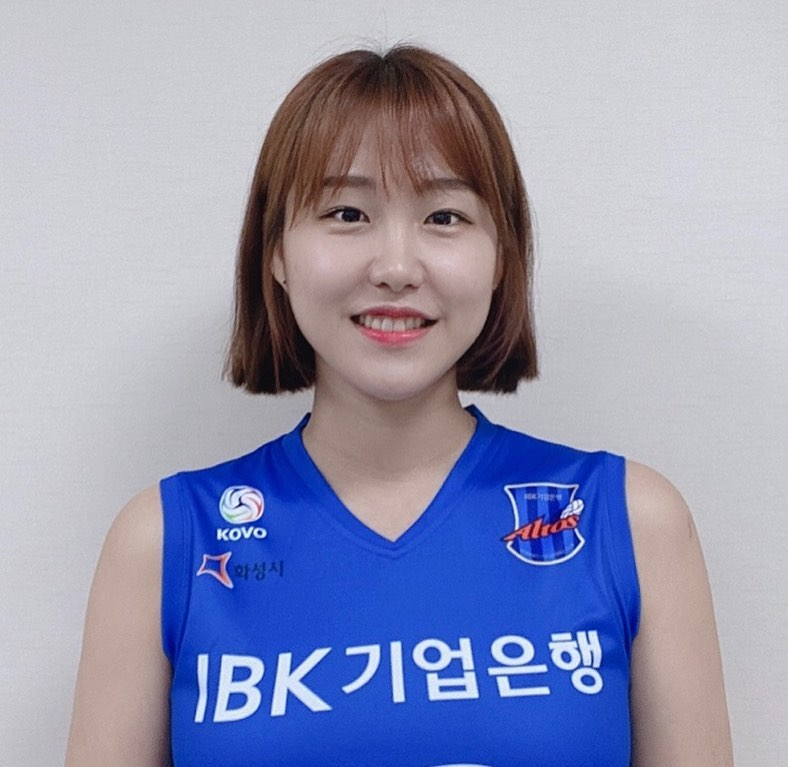

 2011-2012 드래프트에서 1라 4순위로 흥국생명에 지명되었다. 흥국생명에 입단했을 당시 주전 세터 자리는 국가대표 붙박이이자 여자배구의 레전드 중 한 명인 김사니가 지키고 있었으나, 김사니가 2012-13 시즌이 끝나고 FA로 풀려 아제르바이잔 리그로 떠나면서 갑자기 주전 세터 자리를 떠맡게 되었다. 처음에는 김사니의 공백을 그럭저럭 잘 메꿨다는 평을 받았지만 이내 경험부족이 드러나며 흥국 선수단에서 구멍이 되었다. 김사니한테 배워서 그런지 몰빵 빈도가 꽤 높은 편인데, 그런 주제에 토스의 질은 김사니와 완전 딴판일만큼 형편없는 토스워크를 보여줄 뿐 아니라 경기 중 뭐가 말린다 싶으면 멘탈이 나가 아마추어만도 못한 황당한 플레이 역시 자주 선보여서 흥국 팬들의 멘탈을 자주 승천시켰다. 2014-15시즌에 취임한 박미희 감독 체제에서는 완전한 주전 세터로 자리잡았지만 별로 개선되는 점이 없었기 때문에 박미희 양딸 소리까지 들어가며 밉상으로 찍혔는데, 박미희 감독은 조송화가 단계를 밟아 가기도 전에 갑자기 주전으로 올라와 심적으로 흔들렸다고 말한 적이 있다. 2015-2016 시즌 초에는 무릎 부상으로 한동안 결장했다. 조송화가 경기마다 수준 이하의 플레이로 일관함에도 꾸준히 출장한 것은 대안의 부재도 한몫했는데, 그 조송화가 부상으로 나가리되며 박미희 감독은 부랴부랴 이수정을 플레잉코치로 영입하고 수련선수로 입단한 세터 김도희(이후 김다솔로 개명)도 경기에 나서야 했다. 팀이 망하든 말든 꾸준히 경험치를 먹인 효과가 있는지 2016-17 시즌에 팀이 정규리그 우승을 차지하는데 큰 공헌을 하여 암흑기를 끊어낸다. 하지만 챔결에서 숨겨둔 예전 실력이 다시 돌아오며 대형사고를 친 한지현과 함께 유니폼에 별을 다는 데 실패한 원흉이 되고 만다. 시즌 종료 후 FA자격을 얻어 연봉 1억 2천에 흥국과 재계약에 성공하였다. 2017-2018 시즌에는 주장으로 선임되었다. 팀의 실질적인 주장은 김해란이이지만 김해란이 리베로라서 주장을 맡을 수 없기에 조송화가 주장을 맡은 것이라고 한다. 팀 주장은 김해란, 경기 주장은 조송화인 셈. 2018-2019 시즌 들어서도 여전히 살떨리는 토스와 함께 느려터진 구식 배구의 선봉장이 되어 팀의 안티 체제를 담당하였다. 오히려 빠른 토스웍을 보여주는 백업세터 김다솔의 플레이를 보고 싶어하는 팬들이 많을 지경. 이재영의 놀라운 활약으로 우승하기는 했지만 조송화는 그다지 평가가 좋지 못했다. 이재영이 우승세터 만들어줬다는 얘기도 있을 정도였으니... 하지만 챔피언 결정전을 다시 보면 알겠지만, 서브가 약한 흥국생명에서 거의 유일하게 다득점을 만들어줄수 있는 서브를 구사했던 선수였고, 토스웍도 크게 현란하지는 않았지만 2년전에 비해 꽤나 안정적인 모습이었다. 또한 세터로서 작지 않은 키 그리고 나쁘지 않은 블로킹 덕분에 흥국생명의 거미줄 수비에 기여했던 것도 무시할 수 없다. (당장 챔피언결정전에서 흥국생명이 블로킹 낮은 이효희와 이원정, 문정원 쪽으로 계속 공격했던 것을 떠올려본다면...) 2019-20 시즌에는 더 심각해졌다. 불안정한 백토스로 용병인 루시아를 살려내지 못하는 중. 높은 볼도 언더토스로 처리하며 오버토스를 제대로 활용하지 못하고, 토스 정확도도 나빠서 좋은 공격이 이뤄지지 않는 상황을 계속 일으키고 있다. 조송화가 흔들리면 김다솔로 교체되곤 하는데, 교체되자마자 귀신같이 점수차를 줄이는 상황(...)이 속출하고 있다. 하지만 짬은 어디 가지 않아서 꾸준히 흥국의 공격을 책임지는 중. 나름 신인 박현주를 잘 활용했던 부분도 인상적. 이번 시즌을 끝으로 2번째 FA를 맞는데 세터 문제로 골때리는 팀이 많아서 상대적으로 주가가 올라갔다.